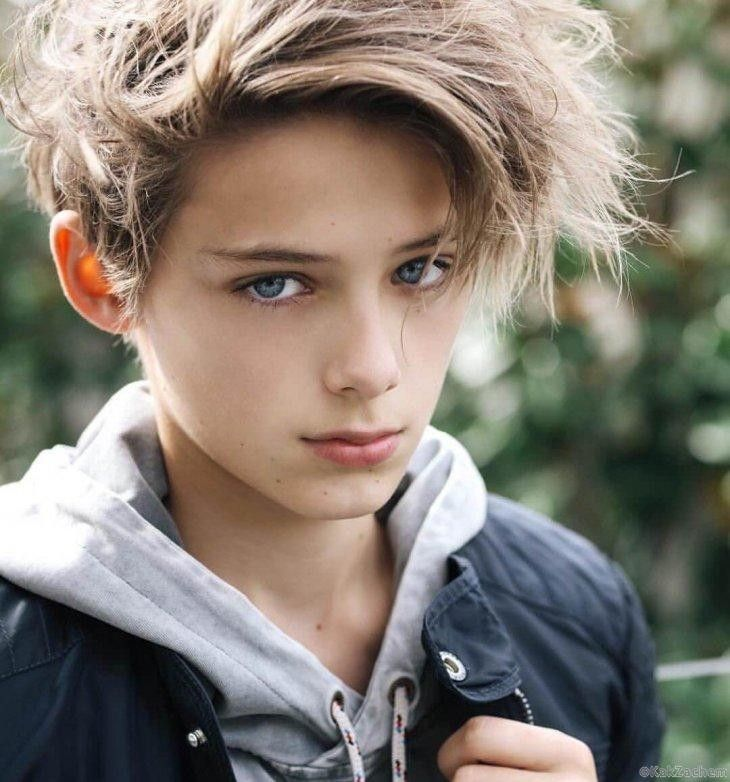

Lysander Alexander ScamanderAbout:1.Lysander Alexander Scamander was born to Rolf Goldstien Scamander and Luna Pandora Lovegood on March 22 2007. 2. He has a younger twin brother called Lorcan Lawrence Scamander. 3. He was sorted into Hufflepuff house when he first went to Hogwarts School of Witchcraft and Wizardry in 2019, at the age of 12. His brother was extemely sick for 3 years, so he and his brother went to school 1 year late. 4. His godparents are Harry James Potter and Ginevra Molly Weasley. 5. He is a pure blood wizard. 6. He was appointed as Prefect in his 5th year, later was appointed Quidditch Captain for Hufflepuff in his 6th year and finally appointed as Head Boy in his 7th year. Characteristics: 1. Brave 2. Smart 3. Charming Possesions: 1. The Scamander's Suitcase 2. His mother's Paint Brush (after she died) 3. A 14", English Oak Wood, Phoenix Feather Core Wand 4. Nimbus 2020 (broomstick) Other Details: Eye Colour - Twinkling Grey Hair Colour - Golden Dirty Blonde Height - 153cm (1st year) Height - 190cm (7th year) Species - Human Gender - Male Patronus - Dragon (Herbridean Black) Boggart - Fear Quidditch Position - Beater for Hufflepuff (2nd year to 6th year), Seeker for Hufflepuff (7th year) Favourite Colour - Royal blue ,Evil purple, Black Nickname - Ly, Sander, Lysan, San, Alex, Lysander Dumbledore...........(Many More) Speciality - Analysing Later Life: Married To - Lily Luna Potter Kids - Lyra Luna Melody Laura Louisa May Scamander (March 21, 2032), Natasha Rose Wanda Hermione Ariana Victoire Scamander (March 21, 2032), Newton Stephen Parker Lysander Jasper Xavier Scamander (March 21, 2032), Jonathan Lawrence Anthony Scorpius Pietro Alexander Scamander (April 7, 2034)(Metamorphmagus), Harry James Albus Charles Scott Loki Scamander (January 5, 2036) Professions - Magizoologist, Head of control and regulation of magical creatures department, Deputy Minister of Magic, C.E.O of The Quibbler, Author Notable Achievements - Order Of Merlin 1st Class (For finding many magical Creatures, for Excellent Work and for Proving the existence of Crumpled Horned Snorcack and for doing social service of catching Death Swallowers for the Auror and Law-enforcement Department) |
 |